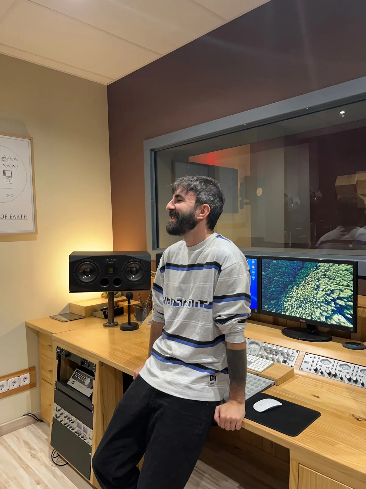

I believe thoughtful sound designis what transforms great ideas into truly immersive experiences.

Nacho Roca
Senior Sound Designer & Audio Implementer
Madrid, Spain
I'm Nacho Roca, a Senior Sound Designer and Foley Artist with over 10 years of experience creating immersive audio for video games, film, documentaries, and international advertising campaigns. Throughout my career, I've had the opportunity to work on everything from AAA productions and indie games to projects for globally recognized brands, always adapting my approach to the unique creative vision of each production.
My work combines sound design, foley, field recording, editing, mixing, and audio implementation to craft distinctive sonic identities that enhance storytelling, strengthen gameplay, and elevate the emotional impact of every experience. Whether building believable worlds for interactive media or designing cinematic audio for film and commercial productions, I believe every project deserves a thoughtful and carefully crafted soundscape that leaves a lasting impression.
I run my own sound studio, where I work directly with clients and collaborate with a wider network of creatives and audio professionals. This allows me to adapt to projects of different scales and production needs while bringing together the right people and resources for each project.